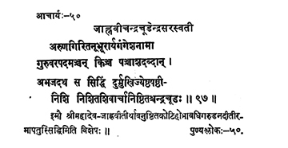

50. आचार्य - 50 - जाह्नवीचन्द्रचूडेन्द्रः
अरुणगिरि ••• निष्ठितश्चन्द्रचूडः ॥ ९७ ॥
श्रीमहादेव ••• विशेषः ॥
Then the preceptor Candracūḍa, son of Aruṇagiri, by name Gaṅgeśa (before initiation), governing the preceptor-ship for fifty years, he, avowed to the rigid worship of Lord Śiva, attained siddhi on the night of Śuklapakṣaṣaṣṭhi of the month Jyeṣṭa in the year Durmukhi.
These two preceptors - Śrī Mahādeva and Śrī Jāhnavītirthas performed innumerable yāgas and attained siddhi on the banks of river Garuḍa (Kaḍilam).
